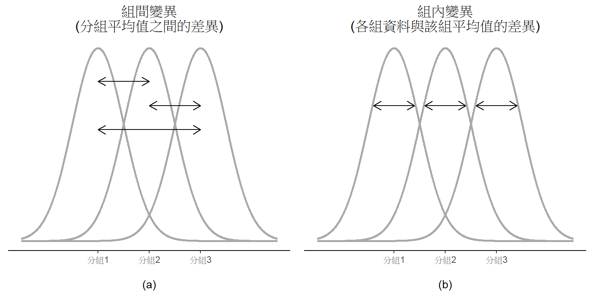
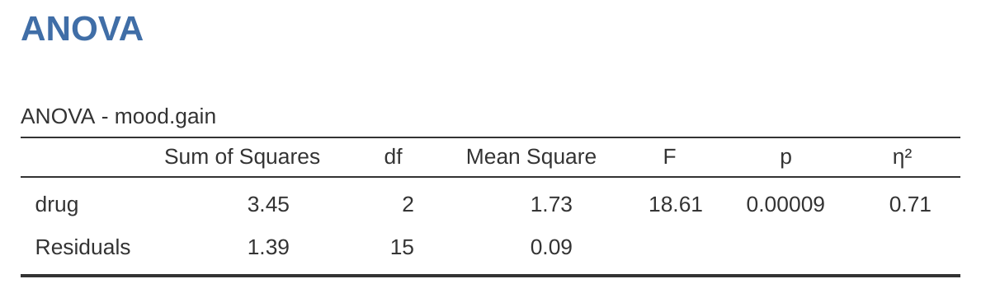

13 比較多組平均值(單因子變異數分析)
譯者註 20240414完成實例演練以外的編修。
這個單元要介紹心理學研究最常使用的一種統計方法～“變異數分析”，通常簡稱ANOVA。羅蘭．費雪爵士在20世紀初奠定了今天這套方法的基本運算原則，同時他給的命名也困擾著今天的學習者，變異數分析這個名稱通常會造成兩種誤會。其一是「變異數」，實際上ANOVA是比較平均數之間的差異。其二是有好幾套統計方法都是奠基於變異數分析，然而有些方法與變異數的關係非常微弱。後面的單元裡，讀者會學到各式各樣的變異數分析方法，分別有各自適用的條件。這個單元要學的只是最簡單的單因子變異數分析，適用研究設計只有幾個實驗組，研究者想要分析每個實驗組在各獨變項條件之間的測量結果差異。
這個單元的學習順序是：首先介紹這個單元用來解說及示範jamovi操作的虛擬資料集。接著說明單因子變異數分析的運算原理，然後說明如何使用 jamovi的變異數分析模組執行變異數分析程序。這兩小節是這個單元的重點。
接下來分別討論在執行變異數分析時必須考慮的一系列重要課題，像是如何計算效果量大小、事後檢定和多重比較的校正，以及變異數分析的適用條件。我們還會討論如何檢查這些條件，以及適用條件不成立時有什麼樣的補救措施。最後一節，我們會學習[單因子重覆量數變數分析]。
13.1 獨立樣本變異數分析示範資料
想像你正在協助進行一項臨床試驗，測試一種名為Joyzepam的新型抗憂鬱藥物的藥效。為了能公平地測試這種新藥的效果，需要分別測試包括新藥的三種藥物，另外兩種藥物之一是安慰劑，還有已經上市的抗憂鬱/抗焦慮藥物，名為Anxifree。研究一開始招募18位患有中度至重度抑鬱症的參與者。其中有一半參與者不只是服藥，同時進行認知行為治療（CBT），另一半參與者未同時進行任何心理治療。藥物以雙盲隨機方法分派給參與者，因此每種藥物分派給3位有進行CBT的參與者及3位未進行心理治療的參與者。每位參與者各自使用藥物3個月後，研究者再評估參與者的情緒改善狀況，以\(-5\)到\(+5\)的數值代表每位參與者的情緒改善狀況。讀者可以載入資料集 Clinical Trial，瀏覽範例資料的內容，其中的變項分別是藥物、治療和情緒改善分數。
為了學習如何使用單因子變異數分析，這裡的目的是要評估各種藥物改善情緒狀況的效果。首先要進行描述統計及繪製統計圖表，我們從 單元 4 已經學到如何使用jamovi完成描述統計，報表會如同 圖 13.1 。

從 圖 13.1 可以看出，服用Joyzepam的參與者，情緒的改善程度優於服用Anxifree及安慰劑。Anxifree的情緒提升程度優於安慰劑，但是沒有像Joyzepam那麼明顯。這裡要回答的問題是，這些藥物的效果是否“真正有效”，還是只是一次偶然的發現？
13.2 單因子變異數分析的運算原理
為了運用臨床試驗資料回答以上的問題，我們要學習使用單因素變異數分析（one-way ANOVA）。如果讀者不知如何操作jamovi的ANOVA模組選單裡眼花撩亂的選項，先仔細閱讀這一節說明的基本原理，了解ANOVA程序每個步驟的運算概念，跟著實例演練操作一兩次，掌握概念後，後續與ANOVA有關的統計方法就不必如此學習了。
獨立樣本變異數分析示範資料的說明提到，研究人員有興趣的是三種藥物改善參與者憂鬱情緒的效果，這個研究設計的分析問題類似 單元 11 介紹的t檢定範例，不過要比較的不只兩組。在此先定義\(\mu_P\)代表安慰劑的情緒變化母群平均值，\(\mu_A\)和\(\mu_J\)分別對對應Anxifree和Joyzepam兩種藥物效果的平均值，所以要檢定的虛無假設就是：三組的母群平均值是相等的。也就是有點悲觀的預測，兩種藥物的效果都沒有比安慰劑好。這樣的虛無假設可以寫成：
\[H_0: \text{結果顯示 } \mu_P=\mu_A=\mu_J\]
因此對立假設就是：三種藥物之中，至少有一種的效果不同於其他兩種。用數學式表示的話，可能會讓有些同學困惑，由於有很多方式能表達虛無假設是錯誤的，我們先將對立假設寫成：
\[H_1: \text{結果}\underline{沒有}\text{顯示 } \mu_P=\mu_A=\mu_J\]
這道虛無假設比之前單元遇到的要棘手得多，應該要如何進行檢定呢？因為這個單元的標題是變異數分析，聰明的讀者應該猜到就是用「變異數分析」，但是如初學的讀者至此可能還不太了解為何這個方法其實是用來處理平均值。這是許多學生第一次上到變異數分析時，最大的挑戰。為了說明運算原理，我們要從變異數的組成談起，請先參考 圖 13.2 了解什麼是組間變異(Between-group variation)及組內變異(Within-group variation)。
13.2.1 計算依變項變異數的兩套公式
我們先定義幾個運算用的符號：G代表分組的數量，因為資料集有三種藥物，所以有 \(G = 3\) 個分組。然後定義\(N\)表示總樣本量，這個資料集有 \(N = 18\) 位參與者，任可一組的人數同樣用 \(N_k\) 表示。這份資料集的三組樣本量都是\(N_k = 6\)。1 最後是定義代表結果變項的Y，也就是每位參與者的情緒狀況改善數值，這裡用\(Y_{ik}\) 代表第 k 組的第 i 位參與者改善數值。因此， \(\bar{Y}\)是所有18位參與者的平均改善數值，\(\bar{Y}_k\)就是第 k 組的第6位參與者的改善狀況。
至此會用的符號都已經就定位，可以開始寫公式了。先回想一下談描述統計的 小單元 4.2 提過的變異數公式，這裡的結果變項Y的樣本變異數公式是 \[Var(Y)=\frac{1}{N}\sum_{k=1}^{G}\sum_{i=1}^{N_k}(Y_{ik}-\bar{Y})^2\] 這個公式看起來和 小單元 4.2 提到的變異數公式長得幾乎一樣。唯一的區別是這個公式有兩個連加記號：各組\(k\)的平均值總和及組內所有參與者 \(i\) 個人數值的總和。請留意一下符號表示的差別，若結果變項符號是 \(Y_p\)，代表資料裡第p位參與者的數值，這樣子只會有所有參與者個人數值的總和。這裡要寫兩個連加符號，原因是要先將每筆數值歸到其中一組，再指定各組內所代表的個人數值。
這裡用具體的例子來理解應該會有用。來看看 表 13.1 的例子，一供有 \(N = 5\) 個人分為\(G = 2\) 組。我們可以武斷地指定「酷」的人是第 1 組，「不酷」的人是第 2 組。最後列出其中有三個人很酷（\(N_1 = 3\)）和兩個人不算酷（\(N_2 = 2\)）。
| name | person P | group | group num. k | index in group | grumpiness \( Y_{ik} \) or \( Y_p \) |
| Ann | 1 | cool | 1 | 1 | 20 |
| Ben | 2 | cool | 1 | 2 | 55 |
| Cat | 3 | cool | 1 | 3 | 21 |
| Tim | 4 | uncool | 2 | 1 | 91 |
| Egg | 5 | uncool | 2 | 2 | 22 |
這個表格結合兩種標記方式。變項 p代表個人，所以用\(Y_p\)代表第 p 人的沮喪指數。像是第四位是Tim，就用 \(p = 4\) 代表他。我們若要用數字討論「Tim」這個人的沮喪程度，可以用\(Y_4 = 91\)來溝通。而這不是唯一可以描述Tim的方式，另一種方式是根據Tim的分組。因為Tim 是「不酷」組（\(k = 2\)）的第一人（\(i = 1\)），也可以用\(Y_{12} = 91\)代表Tim的沮喪程度。
也就是說，每個人 p 都對應一個獨一無二的 ik 組合，這也就能解釋為他我說上面的變異數公式，與以下更早學到的變異數公式相同的 \[Var(Y)=\frac{1}{N}\sum_{p=1}^{N}(Y_p-\bar{Y})^2\]
這兩個公式都是求樣本資料裡所有觀察值的總和，因為\(Y_p\)的公式較簡單，做運算練習的功課大都是用第二個公式。但是變異數分析必須要區別那位參與組是屬於那一組，就需要用\(Y_{ij}\)的公式來做運算。
13.2.2 變異數與離均差平方和
好啦，更進一步認識變異數的計算方法後，就能討論什麼是總離均差平方和（total sum of squares），簡記為\(SS_{tot}\)。變異數是離均差平方和的平均結果，計算\(SS_{tot}\)只要算總和就好。2
在ANOVA的單元討論如何分析變異數，其實是談如何處理離均差平方和，而不是講如何處理變異數。3
接著來談較難講的組間離均差是怎麼回事，這裡就要來拆解分組平均值 \(\bar{Y}_k\) 和總平均值 \(\bar{Y}\)是怎麼構成了。4
如此看來，所有實驗參與者之間的總離均差平方和（\(SS_{tot}\)），等於組間離均差平方和（\(SS_b\)），加上組內離均差平方和（\(SS_w\)）。其實不怎麼需要證明
\[SS_w+SS_b=SS_{tot}\]
太棒了！
所以我們學到什麼？我們已經懂得與結果變項相關的總離均差平方和（\(SS_{tot}\)），可以被劃分為“分組的樣本平均值之間的差異所造成的變異”的總和（\(SS_b\)），加上“除此之外的任何變異”的總和（\(SS_w\)）5。
那要怎麼幫研究人員確認各組的母群平均值相不相等呢？嗯，稍等一下，有沒有看到每種離均差平方和都是各種平均值之間的差異？若是虛無假設的推測是成立的，代表各組樣本平均值\(\bar{Y_k}\) 應該是非常相等的，沒錯吧？也就是說\(SS_b\)要非常小，至少要比“除此之外的任何變異”（\(SS_w\)）明顯的小。有沒有聞到假設檢定的味道了？
13.2.3 離均差平方和與F檢定
前一節我們已經了解ANOVA運算的核心思想是比較\(SS_b\) 和 \(SS_w\)，若是組間離均差平方和\(SS_b\)是相對大於組內離均差平方和\(SS_w\)，就有理由懷疑各組的母群平均值並不相等。為了轉化為可操作的假設檢定程序，我們要進行一些“微調”。我們先來認識如何計算檢驗統計值——F值(F ratio)，然後再來討論要計算F值的原因。
為了將離均差平方和轉換為F值，首先要計算\(SS_b\) 和 \(SS_w\)的自由度。通常自由度是指為了計算估計值，需要貢獻的“資料點”數量，減去滿足“要估計”的參數數量。組內離均差平方和的計算元素是\(N\)筆個別觀察值與\(G\) 個分組平均值之間的變異；而組間離均差平方和的計算元素是\(G\) 個分組平均值與唯一一個總體平均值之間的變異。所以有兩個自由度：
\[df_b=G-1\] \[df_w=N-G\]
這看起來很簡單，是吧。接著是將平方和轉換為“平方和的平均”，也就是各自除以自由度：
\[MS_b=\frac{SS_b}{df_b}\] \[MS_w=\frac{SS_w}{df_w}\]
最後，將組間 MS 除以組內 MS 就能算出 F 值：
\[F=\frac{MS_b}{MS_w}\]
表面上來看，F統計值的運算相當直覺又好懂。F 值越大，就表示組間變異與組內變異之間的差異越大。所以F值起大，能反駁虛無假設的證據力就越強。但是 \(F\) 要有多大才能確實拒絕 \(H_0\)？為了清楚理解，我們要更深入了解 ANOVA 是什麼，以及什麼是離均差平方和的平均？
這些問題在實例演練將有詳細討論，不過如果讀者對於詳細的回答不感興趣，這裡提供一個簡短的說明。為了完成假設檢定，分析人員需要知道虛無假設符合推測時的F值取樣分佈。這一點都不奇怪，因為由虛無假設生成的F統計值取樣分佈，必定是一個F分佈。回想 單元 7 有關F 分佈的說明，\(F\) 分佈的兩個參數各對應兩個自由度。第一個 \(df_1\) 對應組間自由度 \(df_b\)，第二個 \(df_2\) 對應組內自由度 \(df_w\)。
| between groups |
within groups |
|
| df | \( df_b=G-1 \) | \( df_w=N-G \) |
| sum of squares | \( SS_b=\sum_{k=1}^{G} N_k (\bar{Y}_k-\bar{Y})^2 \) | \( SS_w=\sum_{k=1}^{G} \sum_{i=1}^{N_k} (Y_{ik}-\bar{Y}_k)^2 \) |
| mean squares | \( MS_b=\frac{SS_b}{df_b} \) | \( MS_w=\frac{SS_w}{df_w} \) |
| F-statistic | \( F=\frac{MS_b}{df_b} \) | - |
| p-value | [complicated] | - |
表 13.2 摘要所有單因子變異數計算過程所產生的關鍵計數，包括各項計數的計算公式。
[額外的技術細節 6]
13.2.4 實例演練
前一節的說明相當抽象且有點技術性，因此這裡採用範例的計算做個完整的說明。我們再回到一開始介紹的獨立樣本變異數分析示範資料，這份臨床試驗資料已經有描述統計表，我們知道各組平均值：安慰劑的情緒改善平均分數是 \(0.45\)，Anxifree 是 \(0.72\)，Joyzepam 是 \(1.48\)。有了這些資訊和計算公式，我們可以辦個1899年的統計趴7，純粹用鉛筆和紙做計算。不過這裡只做前5筆資料的計算，因為現在不是沒有計算機的1899年，而且原作者本人相當懶惰。首先從計算組內離均差平方和\(SS_w\) 開始，我們要畫一張像 表 13.3 的表格來協助計算。
| group k | outcome \( Y_{ik} \) |
| placebo | 0.5 |
| placebo | 0.3 |
| placebo | 0.1 |
| anxifree | 0.6 |
| anxifree | 0.4 |
第一步的表格只有原始資料，也就是每位參與者服用藥物的分組變項，以及情緒改善狀況的結果變項。請注意，這個結果變項對應前面提到的\(\bar{Y}_{ik}\)。接下來是計算每位參與者所屬分組的分平均值，\(\bar{Y}_k\)。這個步驟並不困難，因為描述統計表裡都有了，加上去後就變成 表 13.4 。
| group k | outcome \( Y_{ik} \) | group mean \( \bar{Y}_k \) |
| placebo | 0.5 | 0.45 |
| placebo | 0.3 | 0.45 |
| placebo | 0.1 | 0.45 |
| anxifree | 0.6 | 0.72 |
| anxifree | 0.4 | 0.72 |
都算到這裡了，接著就能計算每位參與者的離均差，也就是\(Y_{ik} - \bar{Y}_k\)，也能順手把每個離均差平方，最後就得到 表 13.5
| group k | outcome \( Y_{ik} \) | group mean \( \bar{Y}_k \) | dev. from group mean \( Y_{ik} - \bar{Y}_k \) | squared deviation \( (Y_{ik}-\bar{Y}_k)^2 \) |
| placebo | 0.5 | 0.45 | 0.05 | 0.0025 |
| placebo | 0.3 | 0.45 | -0.15 | 0.0225 |
| placebo | 0.1 | 0.45 | -0.35 | 0.1225 |
| anxifree | 0.6 | 0.72 | -0.12 | 0.0136 |
| anxifree | 0.4 | 0.72 | -0.32 | 0.1003 |
計算組內離均差平方和就簡單啦，就是將所有離均差平方加起來：
\[ \begin{split} SS_w & = 0.0025 + 0.0225 + 0.1225 + 0.0136 + 0.1003 \\ & = 0.2614 \end{split} \]
當然，真正完整的計算是要將全部18筆觀察值進行以上四個計算步驟，而不是只算演練的五筆。讀者有心的話，可以繼續筆算，不過這麼做相當繁瑣。其實也可以用LibreOffice或Excel試算表軟體演練，試試看並不困難。讀者們可以自已在Excel開一個檔案，命名為clinicaltrial_anova.xls。完成這裡示範的四個步驟，就能得到組內離均差平方和的值是\(1.39\)。
到這裡已經算出組內離均差平方和\(SS_w\)的值，接下來就是處理組間離均差平方和\(SS_b\) 。其實計算步驟相當類似，差異是要改成計算各分組平均值 \(\bar{Y}_k\) 與總平均值 \(\bar{Y}\)的差異，計算表格就變成 表 13.6 ，得到的值是 \(0.88\)。
| group k | group mean \( \bar{Y}_k \) | grand mean \( \bar{Y} \) | deviation \( \bar{Y}_k - \bar{Y} \) | squared deviation \( ( \bar{Y}_k-\bar{Y})^2 \) |
| placebo | 0.45 | 0.88 | -0.43 | 0.19 |
| anxifree | 0.72 | 0.88 | -0.16 | 0.03 |
| joyzepam | 1.48 | 0.88 | 0.60 | 0.36 |
不過因為是計算組間的平方和，還要將每個離均差平方先乘以 \(N_k\)，也就是各組的觀察值數量。這樣做是因為同組的\(N_k\)個觀察值，都與組間差異有關。安慰劑組有六筆資料，而安慰劑組的平均值與總平均值相差 \(0.19\)，因此六位參與者的組間離均差平方加權總和是\(6 \times 0.19 = 1.14\)。所以計算表格還要擴展成 表 13.7 。
| group k | ... | squared deviations \( (\bar{Y}_k-\bar{Y})^2 \) | sample size \( N_k \) | weighted squared dev \( N_k (\bar{Y}_k-\bar{Y})^2 \) |
| placebo | ... | 0.19 | 6 | 1.14 |
| anxifree | ... | 0.03 | 6 | 0.18 |
| joyzepam | ... | 0.36 | 6 | 2.16 |
接著就可以將所有“加權的離均差平方”加起來，得到組間離均差平方和：
\[\begin{aligned} SS_b & = 1.14 + 0.18 + 2.16 \\ &= 3.48 \end{aligned}\]
正如讀者看到的，這次計算離均差平方和的步驟比較少 8。即然己經算出\(SS_b\) 和 \(SS_w\)的值，ANOVA剩下的工作就就相當簡單了。接下來是計算自由度。由於知道 \(G = 3\) 個分組以及 \(N = 18\) 個觀察值，自由度用簡單的減法就可以計算：
\[ \begin{split} df_b & = G-1 = 2 \\ df_w & = N-G = 15 \end{split} \]
有了離均差平方和和自由度的值，只要以前者除以後者，就能算出組內與組間變異數，也就是離均差平方和的平均：
\[ \begin{split} MS_b & = \frac{SS_b}{df_b} = \frac{3.48}{2} = 1.74 \\ MS_w & = \frac{SS_w}{df_w} = \frac{1.39}{15} = 0.09 \end{split} \]
快要完成了。有了兩個平均值，就能計算最想知道的F值。只要將\(MS_b\)除以\(MS_w\)就能得到。
\[ \begin{split} F & = \frac{MS_b}{MS_w} = \frac{1.74}{0.09} \\ & = 19.3 \end{split} \]
我們真的完成了，很令人高興對吧！有了檢定統計值，最後就是判斷這個統計值是否代表結果是顯著的。如同在 單元 9 討論過的手作方法，有心的讀者可以翻開任何一本統計教科書的附錄，查找其中有關F檢定的表，只要找到指定 \(\alpha\)值所對應的閾值，例如 \(0.05\)，\(0.01\) 或 \(0.001\)，搭配 自由度2 和15。設定\(\alpha\)為 \(0.001\) 的話，會查到F的閾值是\(11.34\)。因為小於最後算出的F值，可以宣稱\(p < 0.001\)。但這是時代的眼淚，今天各式各樣的統計軟體能為我們算出精確的p值。這個範例的p值是 \(0.000071\)。除非我們對型一錯誤率採取非常謹慎的立場，我們幾乎 可以結論這樣的研究結果能拒絕虛無假設。
至此己經完成了ANOVA的基本計算，將以上步驟算出的數值，整理成如同 表 13.1 的報表，是傳統的變異數分析報告規範。完整的ANOVA報表請見 表 13.8 。
| df | sum of squares | mean squares | F-statistic | p-value | |
| between groups | 2 | 3.48 | 1.74 | 19.3 | 0.000071 |
| within groups | 15 | 1.39 | 0.09 | - | - |
到這裡，讀者應該不大想靠純手工計算整理出這樣的報表，幾乎所有專業統計軟體，包括 jamovi，都能將ANOVA 的結果統整成像 表 13.8 的表格，所以最好習慣一下。儘管軟體能輸出完整的 ANOVA 報表，我們從未有需要在報告裡置放整份表格，現代學術寫作規範所建議的標準格式是類似以下的句子：
單因子變異數分析顯示，測試的藥物對情緒改善有顯著影響，F(2,15) = 19.3，p < .001。
我的老天！做了這麼多事，只為了寫這一行短句。
13.3 jamovi的變異數分析模組
譯者註 本單元內容為AI初翻，請謹慎使用。
我相當確定在讀完上一節之後，您在想什麼，特別是如果您按照我的建議，用鉛筆和紙（即在試算表中）自己完成所有這些工作。自己做 ANOVA 計算很糟糕。沿途我們需要做相當多的計算，如果每次想做 ANOVA 都要一次又一次地做這些計算，會讓人厭煩。
13.3.1 使用jamovi進行變異數分析
為了讓您的生活更輕鬆，jamovi 可以做 ANOVA… 哈拉！ 轉到「ANOVA」-「ANOVA」分析，將 mood.gain 變項移到「依賴變項」框中，然後將 drug 變項移到「固定因子」框中。這樣應該會得到 圖 13.3 中所示的結果。9 注意我還勾選了 ’Effect Size’選項下的 \(\eta^2\) 复选框，念作“ eta 平方”，這也顯示在結果表格上。稍後我們將回到效應大小。

jamovi 的結果表格顯示了平方和值、自由度以及我們現在並不真正感興趣的其他一些數量。然而，請注意，jamovi 不使用「組間」和「組內」這兩個名稱。 相反，它嘗試分配更有意義的名稱。 在我們的特定示例中，組間方差對應於藥物對結果變項的影響，組內方差對應於“剩餘”的可變性，因此它將其稱為殘差。 如果我們將這些數字與 [A worked example] 中我手工計算的數字進行比較，可以看到它們或多或少是相同的，除了四捨五入誤差。組間平方和為 \(SS_b = 3.45\)，組內平方和為 \(SS_w = 1.39\)，各自的自由度為 \(2\) 和 \(15\)。我們還得到了 F 值和 p 值，同樣，這些數字與我們在手工計算時的數字差不多相同，只是四捨五入誤差。
13.4 效果量
衡量 ANOVA結果效果量有好幾種方法，其中最常用的指標是 \(\eta^2\)( eta sqaured )和淨 \(\eta^2\)( partial eta sqaured )。在單因子變異數分析的狀況，這兩種指標是一樣的，因此這裡只解釋 \(\eta^2\)。\(\eta^2\) 定義相當簡單明瞭：
\[\eta^2=\frac{SS_b}{SS_{tot}}\]
前面有認真演練的話一看就懂。 圖 13.3 展示的ANOVA 報表有呈現\(\eta^2\)，簡單驗算一下，因為\(SS_b = 3.45\) 還有 \(SS_tot = 3.45 + 1.39 = 4.84\)，所以可以算出：
\[\eta^2=\frac{3.45}{4.84}=0.71\]
解讀\(\eta^2\)同樣直接了當，它的效果量公式就是指根據預測變項，結果變項的變異可以被解釋的比例。\(\eta^2=0\) 代表兩種變項之間完全無關，\(\eta^2=1\)則表示兩者關係密切。值得一提的是，\(\eta^2\)與 小單元 12.6.1 提過的是同一種效果量家族成員，有效力相等的解釋力。許多統計教科書建議使用 \(\eta^2\) 作為 ANOVA的預設效果量指標，不過荷蘭心理學者Daniel Lakens在一篇有趣的blog文章提到，以統計實務處理的真實資料來看，\(\eta^2\)可能不是最好的效果量指標，因為這是一個有偏誤的估計值。還好jamovi還可以選擇使用另一個估計偏誤較少的指標 \(\omega^2\) (omega squared) 。
13.5 多重比較與事後檢定
ANOVA報表顯示至少三組樣本之間存在顯著差異時，研究者會想知道是那幾組之間存在差異。以藥物臨床試驗的範例來說，由於虛無假設是三種藥物的情緒改善狀況完全一樣。不過仔細一想的話，這個範例的虛無假設宣告了三件不一樣的預測：
- Anxifree這款舊藥的效果沒有比安慰劑更好： \(\mu_A = \mu_P\)
- 新藥Joyzepam的效果沒有比安慰劑更好： \(\mu_J = \mu_P\)
- Anxifree 和 Joyzepam 兩款藥的效果沒什麼差別： \(\mu_A = \mu_J\)
如果以上三項宣告有一項不成立，整個虛無假設也是不成立。因為ANOVA的分析結果已經確認可以拒絕虛無假設，所以至少有一個宣告是不成立的。儘管任何一個宣告被拒絕都是一個有趣的結論，但是是那幾個宣告呢？即然關注的是新藥 Joyzepam的效果有沒有確實地比安慰劑好，新藥與舊藥Anxifree的比較就非常重要。想清楚關注的目標，真正有意義的對比更有可能是Anxifree與安慰劑的效果差異。雖然更早有其他研究人員比較過Anxifree與安慰劑的效果好幾次，這次分析能再次確認早期的研究成果可以重現
將虛無假設分解為三個宣告後，就能將八種可能的分析結果表列出來，也就是 表 13.9 。
| possibility: | is \( \mu_P = \mu_A \)? | is \( \mu_P = \mu_J \)? | is \( \mu_A = \mu_J \)? | which hypothesis? |
| 1 | \( \checkmark \) | \( \checkmark \) | \( \checkmark \) | null |
| 2 | \( \checkmark \) | \( \checkmark \) | alternative | |
| 3 | \( \checkmark \) | \( \checkmark \) | alternative | |
| 4 | \( \checkmark \) | alternative | ||
| 5 | \( \checkmark \) | \( \checkmark \) | \( \checkmark \) | alternative |
| 6 | \( \checkmark \) | alternative | ||
| 7 | \( \checkmark \) | alternative | ||
| 8 | alternative |
既然已經拒絕虛無假設，第一種分析結果已經出局。接著就要問，其餘七種可能的分析結果，才是正確的結論？面對這樣的局面，最後再看一次描述統計報告，像是 圖 13.1 的統計圖，我們可以看到 Joyzepam 比安慰劑和 Anxifree好，但是Anxifree 和安慰劑的效果沒有差別是最有可能的結論。不過，若是要提出精確的報告，就需要做進一步的檢定。
譯者註 本節其餘內容有部分為AI初翻，請謹慎使用。
13.5.1 成對t檢定
能要怎麼檢定？由於要比較三對分組平均值：安慰劑對 Anxifree，安慰劑對 Joyzepam，和 Anxifree 對 Joyzepam，最單純的方法是執行三個獨立t檢定，一一確認檢定結果。在 jamovi 中這很容易做到。轉到 ANOVA 的 ‘Post Hoc Tests’（事後檢驗）選項，將 ‘drug’（藥物）變項移到右側的活動框中，然後單擊 ‘No correction’（無校正）複選框。這將產生一個整齊的表格，顯示藥物變項的三個水平之間的所有成對 t 檢驗比較，如 圖 13.4 中所示。

13.5.2 多重檢定的校正
前面提過一次做大批t檢定可能會有問題，最大的問題是同時執行多組t檢定，在沒有太多理論指引的時候，就只是單純期待有那幾組會出現顯著結果，很容易把科學分析搞成一場「魷魚遊戲」。這種對多組差異進行無理論基礎的比較，稱為事後分析（“post hoc” 是拉丁語，意為 “在正事之後”）。10
事後分析不是不可以做，但需要非常小心。像是前一節介紹的成對t檢定應該儘量避免，因為每組t檢定的型一錯誤率都設定為.05的話，在此條件執行了三組t檢定，會導致型一錯誤率膨脹。想像有件ANOVA程序要分析10組平均值，然後挑出其中45筆組間差異進行「事後」t檢定，想知道有那些組別之間有顯著差異，如同 單元 9 已經討論過的，這種狀況僅憑偶然性，就會看到2或3個顯著結果。虛無假設檢定有效的基本原則是，分析者嚴格控制型一錯誤率，現在為了確定造成ANOVA顯著結果的原因，不受控制地執行多組t檢定，己經導致全族45組的型一錯誤率膨脹到天邊了。
解決方法通常是校正p值，控制全族的總型一錯誤率(參考 Shaffer, 1995)。這種要於事後分析的校正，通常稱為多重比較校正，有時也叫「即時推論」(simultaneous inference)。其實統計學已經開發出許多校正方法，在這一節還有下一個單元的 小單元 14.8 會討論其中幾種，本書介紹的只是最常見的而己(有與趣的讀者請參考 Hsu, 1996 )。
13.5.3 Bonferroni校正
Bonferroni校正是其中最簡單的一種方法(Dunn, 1961)。如果現在要處理m個單獨的檢定，這個方法能確保出現任何型一錯誤的總機率上限是\(\alpha\)。11 照字面說的話，Bonferroni校正只是「將所有原始 p 值乘以 m」。真正的做法是指定校正前的p值為\(p\)，校正後的p值為\(p_j^{'}\)，根據Bonferroni校正，校正前後的p值關係是：
\[p_j^{'}=m \times p\]
採用Bonferroni校正的話，只要得到\(p_j^{'} < \alpha\)就能拒絕虛無假設。這種方法的邏輯非常簡單：現在要進行m組單獨的檢定，如果設定每個檢定的型一錯誤率上限是\(\frac{\alpha}{m}\)，所有檢定的總型一錯誤率就不會大於 \(\alpha\)。這種方法簡單到Bonferroni在描寫這種方法的論文裡說道：
因為這個方法如此簡單，又易於使用，我肯定以前一定有人用過。但是，翻遍任何文獻我都找不到，只能推想：正是因為這種方法簡單到讓諸位聰明的統計學家，意識不到在某些情況是一個絕妙方法(Dunn, 1961，第52-53頁)。
要在 jamovi 中使用邦弗隆尼校正，只需單擊「校正」選項中的「邦弗隆尼」復選框，您將在 ANOVA 結果表中看到另一列，顯示邦弗隆尼校正的調整後 p 值（ 表 13.8 ）。如果我們將這三個 p 值與未校正的成對 t 檢驗的 p 值進行比較，很明顯 jamovi 所做的唯一事情就是將它們乘以 \(3\)。
13.5.4 Holm校正
雖然Bonferroni校正非常簡單，但是不是最好的校正方法。另一種常用的方法是Holm校正(Holm, 1979)。這種方法背後的思路是假設按照p 值的大小，從最小的比較開始，調整到第j個比較的p值為止，以下列公式校正p值
\[p_j^{'}=j \times p_j\]
也就是最大的 p 值保持不變，第二大的 p 值翻倍，第三大的 p 值翻三倍，依此類推。或者用以下等式挑出較大者。
\[p_j^{'}=p_{j+1}^{'}\]
這可能不大好懂，讓我們慢慢了解Holm校正的原理。首先將\(m\)組檢定的p值按照數值大小排序，從最小的排到最大的。最小的 p 值只要乘以 \(m\)，其他p值則要兩個步驟校正。像是第二小的 p 值首先要乘以 \(m - 1\)，若是這個校正後的p值大於前一次校正的p值，就是完成校正；若是小於前一次校正的p值，改換為前一次的校正後p值為此次的校正結果。 表 13.10 展示五次多重比較檢定的p值，如何用Holm校正來調整每個檢定的p值。
| raw p | rank j | p \( \times \) j | Holm p |
| .001 | 5 | .005 | .005 |
| .005 | 4 | .020 | .020 |
| .019 | 3 | .057 | .057 |
| .022 | 2 | .044 | .057 |
| .103 | 1 | .103 | .103 |
希望以下說明能讓讀者們了解。
雖然計算稍微麻煩，Holm校正有一些優點，像是比Bonferroni校正保證更低的型二錯誤率，因此可提高統計考驗力。此外，Holm校正保障每個檢定有相同的型一錯誤率，雖然這套方法執行下來看起來不大像。多數真正要跑統計的研究者，搞清楚兩種校正方法的原理好，一致支持Holm校正。所以對於還在起步的讀者，Holm校正應該是首選的校正方法。 圖 13.4 展示Holm校正的 p 值，如同以上說明，最大的 p 值（ Anxifree 和安慰劑的比較）沒有改變。它的值為 .15，和一開始未做校正的值完全相同。相比之下，最小的 p 值（Joyzepam 與安慰劑）是原來的三倍。
13.5.5 事後檢定的報告格式
完成事後比較，確定是那幾組有真正的顯著差異之後，我們可以寫正式報告：
以Holm校正調整後 p 值的事後檢定顯示，與 Anxifree（p = .001）和安慰劑（\(（p = 9.0 \times{10^{-5}}\)）相比，Joyzepam 有更顯著的情緒改善效果。此次研究沒有發現 Anxifree 的效果比安慰劑好的證據（\(p = .15\)）。
若是不想報告精確的 p 值，可以將其中的數值改為 \(p < .01\)、\(p < .001\) 和 \(p > .05\)。無論哪種表達方式，關鍵是要說明p 值有用Holm校正調整 。當然，這段報告之外的其他部分，應該要包括組平均值和標準差的描述統計資訊，因為這些 p 值並不是什麼充分的資訊。
13.6 單因子變異數分析的適用條件
變異數分析也和其他統計方法一樣，需要確認資料性質符合幾個適用條件，尤其是殘差。這裡特別談三個關鍵條件：常態性、變異同質性和獨立性。
[額外的技術細節 12]
那要如何檢查殘差的適用條件呢？就以上提到的三個條件，以下分別討論。
- 變異同質性。因為會用單因子變異數分析的狀況只會有一個母群標準差\(\sigma\)，各分組資料不會有各自的母群標準差\(\sigma_k\)。這就是變異同質性的真義，設定各分組的標準差都與總標準差相等，因此又被稱為等變異性。檢核變異同質性將會詳細說明如何檢測。
- 常態性。殘差必定符合常態分佈。如同 小單元 11.9 介紹過的，可以察看Q-Q圖，或執行Shapiro-Wilk檢定來做評估。檢核常態性將有進一步說明。
- 獨立性。解釋這個條件有點棘手。基本意思是，任何一筆觀察值的殘差與其他觀察值的殘差彼此之間毫無關聯。符合獨立性的一組資料裡，所有 \(\epsilon_{ik}\) 的來源不存在任何交集。這個條件沒有現成或簡易的檢核方法，只能從研究設計(參考 單元 2 )發覺有無違反獨立性的狀況。不存在獨立性的最經典狀況是重複測量設計，每個研究參與者會在多個條件中被測量，如此一來就違反獨立性的條件，不可能以單因子變異數分析處理資料。如果一項研究具備這樣的設計，就需要使用單因子重覆量數變異數分析。
13.6.1 檢核變異同質性
檢核變異數分析的第一步，就像坐大型遊輪出海，要仔細觀察海面是不是平靜無波，能讓遊輪安全離港！
– 喬治·博克斯 (Box, 1953)
據說殺貓有千百種方法，檢核變異同質性也有千百種方法。當然在動物保護意識極高的現代，這句話不能亂說。依照原作者曾閱讀文獻，最常見到的檢核方法是Levene檢定法(Levene, 1960)，以及Brown-Forsythe檢定法(Brown & Forsythe, 1974)。
無論是採用Levene還是Brown-Forsythe，檢定統計值\(F\)或\(W\)的計算程序都和ANOVA的F統計值一樣，只是結果變項的符號是用\(Z_{ik}\)代表而不是\(Y_{ik}\)。知道了這些，我們就可以看看如何使用jamovi進行檢檢。
[額外的技術細節13]
13.6.2 jamovi的Levene檢定
譯者註 本單元內容為AI初翻，請謹慎使用。
好的，那麼我們該如何進行Levene檢驗呢？其實很簡單 - 在ANOVA的”假設檢查”選項下，只需點擊”變異數同質性檢驗”複選框。如果我們查看 圖 13.5 中的輸出，我們可以看到檢驗結果並無顯著差異（\(F_{2,15} = 1.45, p = .266\)），所以變異數同質性假設看起來沒有問題。然而，外表可能會讓人受騙！如果您的樣本量相當大，那麼即使變異數同質性假設沒有被違反到影響ANOVA的穩健性，Levene檢驗也可能顯示出顯著效應（即p < .05）。這正是George Box在上面引述中所指出的觀點。同樣地，如果您的樣本量相當小，那麼變異數同質性假設可能不被滿足，而Levene檢驗可能不顯著（即p > .05）。這意味著，在對假設是否被滿足進行任何統計檢驗的同時，您應該總是繪製每個分組/類別的均值周圍的標準差……只是為了看看它們是否看起來相當相似（即變異數同質性）或不相似。
13.6.3 校正異質性的分析結果
譯者註 本單元內容為AI初翻，請謹慎使用。
在我們的示例中，變異數同質性假設被證明是相當可靠的：Levene檢驗結果並無顯著差異（儘管我們還應該查看標準差的圖形），因此我們可能不需要擔心。然而，在現實生活中，我們並非總是如此幸運。當變異數同質性假設被違反時，我們該如何拯救我們的ANOVA呢？如果您回想一下我們對t檢驗的討論，我們之前遇到過這個問題。Student t檢驗假設等方差，所以解決方法是使用不需要等方差假設的Welch t檢驗。實際上， Welch (1951) 還展示了我們如何解決ANOVA的這個問題（Welch單因素檢驗）。它在jamovi中使用One-Way ANOVA分析實現。這是一種專為單因素ANOVA設計的分析方法，要在我們的示例中執行Welch單因素ANOVA，我們將按照之前的方式重新運行分析，但這次使用jamovi的ANOVA - One Way ANOVA分析命令，並選擇Welch檢驗的選項（參見 圖 13.6 ）。為了理解這裡發生了什麼，讓我們將這些數字與我們最初在使用jamovi進行變異數分析時得到的數字進行比較。為了省去您回顧的麻煩，上次我們得到的是：\(F(2, 15) = 18.611, p = .00009\)，這也顯示為 圖 13.6 中One-Way ANOVA的Fisher檢驗。

好的，最初我們的ANOVA結果是\(F(2, 15) = 18.6\)，而Welch單因素檢驗給出的是\(F(2, 9.49) = 26.32\)。換句話說，Welch檢驗將組內自由度從15降低到了9.49，而F值從18.6上升到了26.32。
13.6.4 檢核常態性
檢驗常態性條件相對簡單， 小單元 11.9 已經介紹所需要的工。要做的只是畫Q-Q圖，可以的話也跑個Shapiro-Wilk檢定法。以 圖 13.7 的Q-Q圖看來，這份資料相當符合常態性。若是Shapiro-Wilk檢定結果也是不顯著，\(p > .05\)，就能確認這筆資料符合常態性條件。不過要注意的是，若是樣本量很大，那麼顯著的Shapiro-Wilk檢定結果實際上可能是偽陽的，也就是說，違反常態性並不會對分析結果造成任何問題。同樣地，非常小的樣本量可能會造成偽陰的檢定結果。這就是為什麼需要Q-Q圖輔助檢核。
除了看Q-Q圖檢查有沒有偏離常態的狀況，Shapiro-Wilk檢定結果並未顯示顯著，p = 0.6053，報表詳見 圖 13.6 。因此，兩種檢核都沒有發現違反常態性的證據。
13.6.5 排除非常態性的分析結果
了解如何檢核常態性，另一方面也要學會如何分析違反常態性的資料。以單因子ANOVA的狀況來說，最簡單的解法是改用不必在意任何適用條件的無母數統計方法。 單元 11 已經介紹過分析兩組平均值的無母數統計方法：Mann-Whitney以及Wilcoxon檢定，若要分析三組以上的平均值，可以使用Kruskal-Wallis秩和檢定法(Kruskal & Wallis, 1952)。
13.6.6 Kruskal-Wallis檢定的運算原理
Kruskal-Wallis檢定與單因子ANOVA有許多相似之處。ANOVA的計算是從定義第k個組的第i個觀察對象，標定在結果變項的數值\(Y_{ik}\)開始。Kruskal-Wallis檢定的第一步是排序所有\(Y_{ik}\)，以資料的序位進行分析。14
13.6.7 更多分析細節
前一節說明Kruskal-Wallis檢定的運算原理，我認為這是思考一種統計檢定如何運作的正確方法。15
但是要跟讀者抱歉一下，還有一個使用限制要交待！什麼限制？因為前面的範例是原始資料沒有任何兩個觀察值數值是相等的，才能使用Kruskal-Wallis檢定。也就是說，如果存在相同的數值，就必須引進一個校正因子才能計算。因為再有耐心的讀者看到這裡，也不再想讀下去了，或者覺得遇到問題再查什麼是tie-correction factor(TFC)就好了。這裡只用範例資料做個簡單的說明，以及解釋為何可以暫視無視這個限制。以下根據clinicaltrails的原始資料變項mood.gain建立一個對應觀察值出現次數的資料表單，以\(f_j\)表示每個觀察值數值在資料裡的出現次數，下標\(j\)代表資料數值的排序。全部例出後就如 表 13.11 的第二列。
| 0.1 | 0.2 | 0.3 | 0.4 | 0.5 | 0.6 | 0.8 | 0.9 | 1.1 | 1.2 | 1.3 | 1.4 | 1.7 | 1.8 |
| 1 | 1 | 2 | 1 | 1 | 2 | 1 | 1 | 1 | 1 | 2 | 2 | 1 | 1 |
次數表排序第三的情緒改善分數是0.3，出現次數是2，表示所有參與者裡有兩位的情緒改善是0.3分。16
所以，我們不用太擔心使用限制，jamovi輸出的Kruskall-Wallis統計值是校正處理後的。我們終於走完Kruskal-Wallis檢定的學習之路了，讀者也了解為什麼不需要在意手上的資料有沒有使用限制的理由了吧？
13.6.8 使用jamovi完成Kruskal-Wallis檢定
譯者註 本單元內容為AI初翻，請謹慎使用。
儘管我們在努力理解Kruskal Wallis檢驗實際上做了什麼方面經歷了恐懼，但事實證明，進行該檢驗相當無痛，因為jamovi在ANOVA分析集中有一個名為「非參數」-「單因子ANOVA（Kruskall-Wallis）」的分析。大多數時候，你將擁有像clinicaltrial.csv這樣的數據集，其中包含你的結果變項mood.gain和一個分組變項drug。如果是這樣，你可以直接在jamovi中運行分析。這給我們提供了一個Kruskal-Wallis \(\chi^2 =12.076, df = 2, p = 0.00239\)，如 圖 13.8 所示。

13.7 單因子重覆量數變異數分析
單因子重覆量數變數分析檢驗是一種用於每位參與者有參與三種以上實驗條件，或者各組的參與者有密切匹配條件，也有三個以上組平均差異要比較的狀況。所以各實驗條件應該有數量相等的觀察值。搭配這種研究設計的分析也可叫做「相依樣本變異數分析」或「參與者內變異數分析」。
重覆量數變數分析的運算原理與獨立樣本ANOVA非常像，後者有時也叫做「參與者間變異數分析」。之前討論參與者間變異數分析時提到組間離均差平方和（\(SS_b\)），以及組內離均差平方和（\(SS_w\)），各自除以對應的自由度就會得到\(MS_b\)和\(MS_w\)，如同 表 13.1 。F統計值的計算公式是：
\[F=\frac{MS_b}{MS_w}\]
重覆量數變異數分析的F統計值的計算方法也是差不多，只是\(SS_w\)要再分成兩部分，不像獨立樣本ANOVA直接用\(SS_w\)做為\(MS_w\)的分母。因為每一組的參與者都是同樣的人，可以從組內離均差平方和移出參與者間個別差異\(SS_{subjects}\)。在此不深談如何移出的細節，只要想像每位參與者都是名為「參與者」這個變項的其中一個變項水準。只要將\(SS_w\)減掉\(SS_{subjects}\)，就能得到一個較小的\(SS_{error}\)：
\[\text{獨立樣本變異數分析: } SS_{error} = SS_w\] \[\text{重覆量數變異數分析: } SS_{error} = SS_w - SS_{subjects}\] 減少的\(SS_{error}\)可以增加統計檢定的考驗力，不過還要看減少的\(SS_{error}\)有沒有比減少的自由度更多，因為獨立組的參與者較多，重覆量數的自由度從\((n - k)\)17變為\((n - 1)(k - 1)\)
13.7.1 jamovi的重覆量數變異數分析
譯者註 本單元部份內容為AI初翻，請謹慎使用。
此處以來自 Geschwind (1972) 的研究資料做示範。這個研究的對象是中風後出現語言缺陷的患者，研究者想了解導致語言缺陷的大腦損傷區域，找來六位確診Broca失語者的患者，研究資料如 表 13.12 。
| Participant | Speech | Conceptual | Syntax |
| 1 | 8 | 7 | 6 |
| 2 | 7 | 8 | 6 |
| 3 | 9 | 5 | 3 |
| 4 | 5 | 4 | 5 |
| 5 | 6 | 6 | 2 |
| 6 | 8 | 7 | 4 |
患者需要完成三個單詞識別任務。在第一個（言語生成）任務中，患者需要重複研究者大聲朗讀的單詞。在第二個（概念性）任務中，旨在測試單詞理解能力，患者需要將一系列圖片與其正確名稱匹配。在第三個（語法）任務中，旨在測試正確單詞順序的知識，要求患者對語法不正確的句子進行重新排序。每位患者都完成了所有三個任務。患者嘗試任務的順序在參與者之間進行了平衡。每個任務包括一系列10次嘗試。每位患者成功完成的嘗試次數如 表 13.11 所示。將這些數據輸入jamovi以進行分析（或者使用捷徑加載broca.csv文件）。
要在jamovi中執行一個單因素相關ANOVA，打開一個單因素重覆量數變數分析對話框，如 圖 13.9 中所示，通過ANOVA - Repeated Measures ANOVA進行。

然後：
- 輸入一個重複測量因子名稱。這應該是您選擇的標籤，用於描述所有參與者重複的條件。例如，要描述所有參與者完成的語音、概念和語法任務，一個合適的標籤是“任務”。請注意，這個新的因子名稱代表了分析中的自變項。
- 在重複測量因子文本框中添加第三個級別，因為有三個級別代表三個任務：語音、概念和語法。相應地更改級別的標籤。
- 然後將每個級別變項移動到重複測量單元文本框中。
- 最後，在“假設檢查”選項下，選中“球形性檢查”文本框。
jamovi輸出一個單因素重覆量數變數分析，如 圖 13.10 至 圖 13.13 所示。我們應該首先查看的是Mauchly球形性檢驗，該檢驗測試各條件之間的差異方差是否相等（意味著研究條件之間的差異得分的分佈大致相同）。在 圖 13.10 中，Mauchly檢驗的顯著性水平為\(p = .720\)。如果Mauchly檢驗的結果不顯著（即p > .05，正如此分析中的情況），那麼我們有理由得出差異的方差並無顯著差異（即它們大致相等，可以假定球形性。）。

如果另一方面，Mauchly檢驗顯著（p < .05），那麼我們將得出差異方差之間存在顯著差異，並且未滿足球形性要求。在這種情況下，我們應該對單因素相關ANOVA分析中獲得的F值進行修正：
- 如果”球形性檢驗”表中的Greenhouse-Geisser值> .75，那麼您應該使用Huynh-Feldt修正
- 但如果Greenhouse-Geisser值< .75，那麼您應該使用Greenhouse-Geisser修正。
這兩個修正過的F值都可以在“假設檢查”選項下的球形性修正復選框中指定，修正過的F值將顯示在結果表中，如 圖 13.11 所示。

在我們的分析中，我們發現Mauchly的球形性檢驗的顯著性為p = .720（即p > 0.05）。因此，這意味著我們可以假設已滿足球形性要求，因此無需對F值進行修正。因此，我們可以使用’無’球形性修正輸出值用於重複測量”任務”：\(F = 6.93\)，\(df = 2\)，\(p = .013\)，我們可以得出結論，語言任務中成功完成的測試次數確實會根據任務是語音、理解還是語法為基礎而顯著不同（\(F(2, 10) = 6.93\)，\(p = .013\)）。
在jamovi中，與獨立ANOVA相同，也可以為重覆量數變數分析指定事後檢驗。結果顯示在 圖 13.12 。這些表明語音和語法之間存在顯著差異，但其他級別之間沒有差異。
描述性統計（邊際均值）可以用於幫助解釋結果，在jamovi輸出中生成，如 圖 13.13 。通過比較參與者成功完成試驗的平均次數，可以看出布洛卡失語症患者在語音產生（平均= 7.17）和語言理解（平均= 6.17）任務上表現相對較好。然而，他們在語法任務上的表現明顯較差（平均= 4.33），事後檢驗中語音和語法任務表現之間存在顯著差異。
13.8 Friedman無母數重覆量數變異數分析
譯者註 本單元部份內容為AI初翻，請謹慎使用。
Friedman檢定是單因子重覆量數變異數分析的無母數版本，用來分析三個或更多組排序資料的差異，每組的參與者相同，或者各條件的參與者彼此有密切的匹配條件。如果依變項是序列數值，或者資料未滿足常態性條件，就可以使用這種方法進行假設檢定。
和Kruskall-Wallis檢定相同，徹底解釋需要先知道複雜的數學知識，這裡不會介紹。對於本書的目標讀者們，只要了解jamovi輸出的Friedman檢定報表是已校正的結果， 圖 13.14 是用前面的失語症患者資料做Friedman檢定的報表範例。

在jamovi中運行Friedman檢驗非常簡單。只需選擇分析 - ANOVA - 重覆量數變數分析（非參數），如 圖 13.14 所示。然後將要比較的重複測量變項的名稱（語言、概念、語法）突顯並轉移到“測量：”文本框中。要為三個重複測量變項生成描述性統計（平均值和中位數），請單擊描述性按鈕。
jamovi結果顯示描述性統計、卡方值、自由度和p值（ 圖 13.14 ）。由於p值小於通常用於確定顯著性的水平（p < .05），我們可以得出結論，布洛卡失語症患者在語言生產（中位數= 7.5）和語言理解（中位數= 6.5）任務上表現相當好。然而，他們在語法任務上的表現明顯較差（中位數= 4.5），在事後檢驗中語言和語法任務表現之間存在顯著差異。
13.9 變異數分析與t檢定的關係
這個單元結束之前，還要一件事要讓讀者知道，初學者通常會感到訝異，不過了解這件事是值得的：以ANOVA和學生t檢定分析兩組差異的資料，結果是一樣的。的確，不只輸出的結果相似，各種資訊的統計意義是等價的。這裡用實際的示範取代公式推導讓讀者明白。拿clinicaltrials資料集來看，這次不用drug，改用therapy這個變項做為獨變項。完成ANOVA後，會得到一個F統計值 \(F(1,16) = 1.71\)，和p值 = \(0.21\)。又因為只有兩組，實際上做學生t檢驗就行。t檢定的結果得到t統計值 \(t(16) = -1.3068\) 和 \(p = 0.21\)。讀者也許發現，p值是相同的，都是\(p = .21\)。那麼檢定統計值？因為t統計值是負的，顯然和ANOVA的F值不一樣。其實這裡有個相當直接的轉換關係。只要將t統計值平方，就會得到F統計值：\(-1.3068^{2} = 1.7077\)。
13.10 單元小結
這一章份量不少，但是有一些細節我並未提到18。最明顯的是在此並未討論處理不只一個分組變項的資料，下一個 單元 14 會討論其中一部分。這個單元的學習重點有：
理解單因子變異數分析的運算原理 以及使用jamovi的變異數分析模組
學習如何計算變異數分析的效果量
若是各組的的觀察值數目相等，這樣的研究設計就是“平衡設計”。以這個單位介紹的單因子變異數分析來說，設計是否平衡並不重要。不過要進行較複雜的變異數分析運算，設計是否平衡大有關係。↩︎
所以總離均差平方和的公式與變異數的公式長得幾乎一樣 \[SS_{tot}=\sum_{k=1}^{G} \sum_{i=1}^{N_k} (Y_{ik} - \bar{Y})^2\]↩︎
總離均差平方和能被分解成兩種離均差，帶來計算的便利性。第一種離均差是組內離均差平方和，是每個資料與所屬分組平均值之間差異\[SS_{w}= \sum_{k=1}^{G} \sum_{i=1}^{N_k} (Y_{ik} - \bar{Y}_k)^2\] \(\bar{Y}_k\) 是某一分組平均值，在此代表服用第 k 種藥物的參與者情緒狀態改善狀況，也就是並非比較每個人的數值與所有參與者的總平均值，而是各分組之內的參與者彼此比較。所以\(SS_w\)的值一定會小於總離均差平方和，因為完全不包括分組之間的差異，也就是各種藥物的效果。↩︎
這一步要知道的是如何計算組間離均差平方和 \[ \begin{aligned} SS_{b} &= \sum_{k=1}^{G} \sum_{i=1}^{N_k} ( \bar{Y}_{k} - \bar{Y} )^2 \\ &= \sum_{k=1}^{G} N_k ( \bar{Y}_{k} - \bar{Y} )^2 \end{aligned} \]↩︎
在獨立樣本變異數分的報告裡， \(SS_w\) 也被稱為誤差總和 \(SS_{error}\)。↩︎
追根究底來說，ANOVA 就是兩種不同的統計模型，\(H_0\)和\(H_1\)，的對決過程。這個單元一開始提到虛無假設和對立假設所用描述方式，其實不夠精確。在此要做點補救，儘管這樣會讓一些讀者感到厭煩。回憶一下，這個單元設定的虛無假設是各分組平均值彼此相等。若是如此，拆解結果變項 \(Y_{ik}\) 的方式應該是將個別數值當成唯一的母群平均值\(\mu\)，加上因為測量方式，實際數值與母群平均值之間的偏差，通常會用\(\epsilon_{ik}\)表示，學術界習慣稱為誤差或殘差。不過請小心用詞，如同“顯著”這個詞義的歷史演變，“誤差”的詞義在統計學的場域不完全等於日常生活的模糊含義。日常用語的“誤差”暗示某種錯誤，但是統計學所指的不完全是任何一種錯誤。因此在統計學場域用“殘差”，會比“誤差”不易讓人誤會。這兩個詞都表示“剩餘變異”，也就是模型無法解釋的“部分”。不論是那種稱呼，將虛無假設寫成統計模型的話，看起來就是 \[Y_{ik}=\mu+\epsilon_{ik}\] 本書稍後會討論到，通常會設定各分組的殘差值 \(\epsilon_{ik}\)皆符合平均值為 \(0\)，標準差為 \(\sigma\)的常態分佈。運用從機率入門學到的符號，殘差的數學模型可以寫成 \[\epsilon_{ik} \sim Normal(0,\sigma^2)\] 那要如何設定對立假設 \(H_1\) 呢？虛無假設和對立假設的唯一區別是，研究者認為各組的母群平均值並不相等。所以只要設定\(\mu_k\) 表示第 k 組的母群平均值，\(H_1\) 的統計模型就是 \[Y_{ik}=\mu_k+\epsilon_{ik}\] 同樣地，其中的分組殘差也都是平均值為 \(0\)，標準差為 \(\sigma\)的常態分佈。也就是說，對立假設還帶上 \(\epsilon_{ik} \sim Normal(0,\sigma^2)\) 這個條件。
現在\(H_0\) 和 \(H_1\)的統計模型都正式登場，可以清楚說明如何評估離均差平方和平均，以及如何解釋\(F\)的意思。這裡不需要做任何數學證明，我們只要知道，組內離均差平方和平均 \(MS_w\) 可以當成各組殘差的變異數估計值。組間離均差平方和平均\(MS_b\)也是一組估計值，除了各組殘差的變異數估計值，還有各組平均值之間的差異值。以\(Q\)代表這項差異值，就能將F統計數的公式改寫為 \(^a\) \[F=\frac{\hat{Q}+\hat{\sigma}^2}{\hat{\sigma}^2}\] 若是虛無假設的推測成立，\(Q = 0\)；若是對立假設的推測成立，\(Q < 0\)(請參考 Hays (1994) ，ch. 10)
這就是為什麼在變異數分析的狀況，\(F\) 值必須大於 1，是拒絕虛無假設的基本條件。讀者要注意的是，這不是說F 值不可能小於 1。嚴格地說，如果虛無假設的推測成立，估計值的取樣分佈會逼近期望值是1的F分佈 \(^b\)，所以F 值必須要大於 1，才能安全地拒絕虛無假設。
從上一段的F值公式可知，\(MS_b\)和\(MS_w\)，都有殘差 \(\epsilon_{ik}\) 變異數的估計值，如果虛無假設的推測成立，兩者就只有殘差變異數的估計值。若殘差符合常態分佈，根據 小單元 7.6 學過的卡方分佈，讀者會想到\(\epsilon_{ik}\)的變異數估計值其實應該符合卡方分佈。這就是卡方分佈的真正面貌：無數個符合常態分佈的隨機變數平方後，累加形成的機率分佈。F分佈則是兩件符合卡方分佈的隨機變數之比值，集合形成的機率分佈。當然，以上說明省略許多細節，不過這是至此介紹過的各種統計檢定方法，所依據的取樣分佈來源。
—
\(^a\) 如果讀者已經讀過 單元 14 ，學到如何用 \(\alpha_k\) 定義因子內水準 k 的「處理效應」（參考 小單元 14.1 及 小單元 14.2 ），會知道 \(Q\) 是處理效應平方的加權平均值，\(Q = \frac{(\sum_{k=1}^{G}N_k \alpha_k^2)}{(G-1)}\)
\(^b\) 或者是更精確的F分佈期望值 \(1+\frac{2}{df_2-2}\)。↩︎或者更確切描述是像 “1899年的統計專家那樣熱衷計算，當時我們沒有朋友，也沒有比算術更有趣的事情可做，因為直到 1920 年左右，ANOVA 並不存在於世上。”↩︎
使用 Excel 計算完整的\(SS_b\)，會因為四捨五入得到不大一樣的值，可能是 \(3.45\)。↩︎
與上文中的數字相比，jamovi 的結果更為準確，這是由於四捨五入誤差。↩︎
若是研究前已經有些理論，預期某幾組比較確實是有意義的，那就是另一回事了。這種情況執行多重檢定其實不是「事後分析」，而是「預先計劃的比較」。下一個單元的 小單元 14.9 會更進一步介紹。↩︎
順便一提，並不是所有校正方法都是這樣搞，因為Bonferroni校正是著眼於控制「家族式型一錯誤率」。有些校正方法則是從控制「偽發現率」(False Discovery Rate)下手。↩︎
若是讀者沒有真正親手演練單因子變異數分析的運算原理的範例，最好至少要讀過一遍。這一節裡提到了撐起ANOVA運算流程的統計模型：\[H_0:Y_{ik}=\mu + \epsilon_{ik}\] \[H_1:Y_{ik}=\mu_k + \epsilon_{ik}\]其中\(\mu\)是指處於所有分組平均值中心的總平均之母群期望值，\(\mu_k\)是指第k組平均值的母群期望值。至此一直反覆討論的問題是，研究資料是最適配虛無假設代表的單一總平均，還是對應假設代表的分組平均值。這些討論是有必要的，因為統計模型的設定就是研究問題的形式化！但是在檢定過程的有效性其實是建立在殘差 \(\epsilon_{ik}\) 符合常態分佈的條件，也就是\[\epsilon_{ik} \sim Normal(0,\sigma^2)\]如果沒有這個條件，所有ANOVA的數學運算都無法執行。也可以說，即使依然能進行所有計算，最後得到一個F統計值，但是違反條件造成這個F統計值並不能代表研究結果支持任何一個模型的指標，無法提出有科學意義的結論。↩︎
Levene檢定法非常簡單，先設定結果變項\(Y_{ik}\)。第一步是定義一個新變項\(Z_{ik}\)，表示各組觀察值與該組平均值的偏誤 \[Z_{ik}=Y_{ik}-\bar{Y}_{k}\] 製造新變項有什麼好處？讓我們花一點時間來思考一下\(Z_{ik}\)到底是什麼，以及我們要檢檢什麼。\(Z_{ik}\)代表量測第\(k\)組的第\(i\)次觀察得到的數值，與其組平均值的誤差。變異數分析的虛無假設設定各分組的平均值相等，因此各組平均值的總變異應該也是相等！所以Levene檢定法的虛無假設是設定各組的\(Z\)之母群平均值相等。嗯，那麼有什麼統計方法能用來檢核這個變項？沒錯，就是ANOVA，所以Levene檢定法的流程就是以\(Z_{ik}\)為依變項做分析的ANOVA。那Brown-Forsythe檢定法是怎麼做？有什麼特別之處嗎？其實與Levene檢定法的唯一不同是建立新變項\(Z\)的方式，是用分組中位數計算所有觀察值的誤差分數而不是用分組平均值。所以說，Brown-Forsythe檢定法建立新變項的公式是 \[Z_{ik}=Y_{ik}-median_k(Y)\] \(median_k(Y)\)代表第k組的中位數。↩︎
首先創建新的結果變項\(R_{ik}\)，表示第k組的第i位成員排序。接著計算第k組觀察值的平均排序 \(\bar{R}_k\): \[\bar{R}_k=\frac{1}{N_k}\sum_i R_{ik}\]，以及總平均排序\(\bar{R}\): \[\bar{R}=\frac{1}{N}\sum_i\sum_k R_{ik}\] 完成後，就可以計算與總平均排名\(\bar{R}\)的離均差平方。\((R_{ik} - \bar{R})^2\)代表第ik個觀察值排序與總平均排序的離均差，是一種無母數的計量；還有\((R_{ik} - \bar{R_k})^2\)代表第k組平均排序與總平均排序的離均差，也是一種無母數的計量。因此，離均差平方\((R_{ik} - \bar{R})^2\)就是總體誤差的無母數計量。如此一來，就能按照ANOVA的運算原理，定義排序變異的估計值。首先是“總排序平方和”\[RSS_{tot}=\sum_k\sum_i (R_{ik}-\bar{R})^2\]，以及“組間排序平方和” \[\begin{aligned} RSS_{b}& =\sum{k}\sum_{i}(\bar{R}_{k}-\bar{R})^2 \\ &= \sum_{k} N_k (\bar{R}_{k}-\bar{R})^2 \end{aligned}\] 若是虛無假設成立，且根本沒有真正的組差異，組間排序和\(RSS_b\)應該非常微小，遠小於總排序和\(RSS_{tot}\)。就計算公式來看，這和計算ANOVA 的F統計值非常像，不過因為背後的取樣分佈不同，Kruskal-Wallis檢定統計值記號是K，而K的計算方法是\[K=(N-1) \times \frac{RSS_b}{RSS_{tot}}\] 若是虛無假設成立，K的取樣分佈會逼近自由度為\(G-1\)的卡方分佈。 K的值越大，資料就越不適配虛無假設，因此這是一個單側檢定。當K值足夠大時，就有機會拒絕\(H_0\)。↩︎
不過，從純數學的觀點來看，這樣的複雜解說是不必要的。雖然這裡不會推導公式，讀者可以使用一些線性代數\(^b\)來推想K的公式，為什麼可以轉換為K統計值\[K=\frac{12}{N(N-1)}\sum_k N_k \bar{R}_k^2 -3(N+1)\] K的運算比在前面描述的F要容易得多，但是對於實際操作統計方法的分析人員來說完全沒有意義，將K類比為分析排序資料的ANOVA可能是最好的解讀方法。但是請記住，檢定統計值K與前面的ANOVA統計值F有很大的不同。
—
\(b\)就只是數學運算術語。↩︎根據上一段介紹的數學方法，我們可以知道\(f_3 = 2\)。想通這一點，就可以了解TCF的公式是用來算什麼了：\[TCF=1-\frac{\sum_j f_j^3 - f_j}{N^3 - N}\]jamovi計算出來的K值，正是除以TCF之後，輸出在Kruskal-Wallis檢定報表。↩︎
（n-k）：（參與者數量-組別數量）↩︎
就像其他章節，這個單元有許多參考來源，其中原作者參考最多的專書是 Sahai & Ageel (2000) 。這本書對初學者來說偏難，不過如果學到這裡，想知道更多變異數分析的數學原理，這本書是不錯的參考資源。↩︎